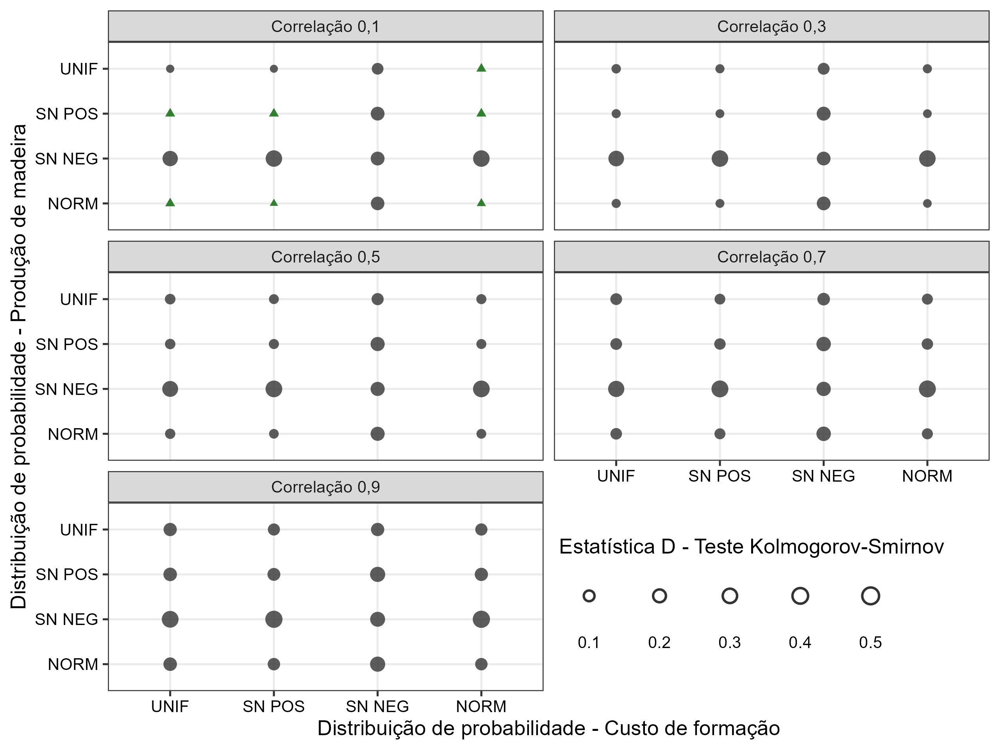

experimento-04_distribuicao-dependencia.Rmd
library(vet)
library(dplyr)
#>
#> Attaching package: 'dplyr'
#> The following objects are masked from 'package:stats':
#>
#> filter, lag
#> The following objects are masked from 'package:base':
#>
#> intersect, setdiff, setequal, union
library(tidyr)
library(ggplot2)
library(stringr)
library(scales)
library(patchwork)
library(purrr)
#>
#> Attaching package: 'purrr'
#> The following object is masked from 'package:scales':
#>
#> discard
tab_amostra_vet |>
ggplot(aes(custo, producao, size = vl_d, color = bl_siginificativo, shape = bl_siginificativo)) +
geom_point(alpha = 0.8) +
facet_wrap(
~vl_correlacao, ncol = 2,
labeller = labeller(
vl_correlacao = \(x) paste("Correlação", formatC(as.numeric(x), decimal.mark = ","))
)
) +
labs(
x = "Distribuição de probabilidade - Custo de formação",
y = "Distribuição de probabilidade - Produção de madeira",
size = "Estatística D - Teste Kolmogorov-Smirnov"
) +
scale_color_manual(values = c("grey20", "darkgreen"), guide = "none") +
scale_size_continuous(breaks = seq(0, 1, 0.1), range = c(0.5, 2), guide = "none") +
scale_shape_discrete(guide = "none") +
scale_x_discrete(
limits = rev,
labels = c("unif" = "UNIF", "sn_pos" = "SN POS", "sn_neg" = "SN NEG", "norm" = "NORM")
) +
scale_y_discrete(
labels = c("unif" = "UNIF", "sn_pos" = "SN POS", "sn_neg" = "SN NEG", "norm" = "NORM")
) +
theme_bw(6) +
theme(
text = element_text(color = "black"),
axis.text = element_text(color = "black"),
legend.position = c(0.5, 0.15), legend.justification = "left", legend.direction = "horizontal"
) +
guides(size = guide_legend(title.position = "top", label.position = "bottom", override.aes = list(shape = 21)))
tab_amostra_vet |>
arrange(-vl_pvalue, vl_d) |>
filter(vl_pvalue >= 0.05) |>
print(n=80)
#> # A tibble: 7 × 7
#> custo producao vl_correlacao cd_marginais vl_pvalue vl_d bl_siginificativo
#> <chr> <chr> <dbl> <chr> <dbl> <dbl> <lgl>
#> 1 sn_pos norm 0.1 sn_pos - norm 0.604 0.0108 TRUE
#> 2 norm norm 0.1 norm - norm 0.376 0.0129 TRUE
#> 3 unif norm 0.1 unif - norm 0.115 0.0169 TRUE
#> 4 norm unif 0.1 norm - unif 0.0969 0.0174 TRUE
#> 5 sn_pos sn_pos 0.1 sn_pos - sn_… 0.0969 0.0174 TRUE
#> 6 unif sn_pos 0.1 unif - sn_pos 0.0935 0.0175 TRUE
#> 7 norm sn_pos 0.1 norm - sn_pos 0.0812 0.0179 TRUE
marginal_custo = "sn_pos"
marginal_producao = "unif"
correlacao = c("0.1", "0.7")
titulo = c("A) Correlação = 0,1", "B) Correlação = 0,7")
plot_prepare <- function(marginal_custo, marginal_producao, correlacao, titulo = NULL) {
tab_amostra_filtro <- bind_rows(
tab_amostra_independente |>
filter(
(cd_var == "custo" & cd_distribuicao == marginal_custo) |
(cd_var == "producao" & cd_distribuicao == marginal_producao)
) |>
mutate(tipo = "Independente"),
tab_amostra_dependente |>
filter(
cd_marginais == paste(marginal_custo, marginal_producao, sep = " - "),
as.character(vl_correlacao) == correlacao
) |>
mutate(tipo = "Dependente")
)
plt_custo_dependencia <- tab_amostra_filtro |>
filter(cd_var == "custo") |>
ggplot(aes(vl_amostra, fill = tipo, color = tipo)) +
geom_density(alpha = 0.5) +
labs(
x = expression(paste("Custo de formação ", "(R$ ", "ha"^"-1", ")")),
y = "Densidade", fill = "Amostragem", color = "Amostragem",
subtitle = titulo
) +
scale_x_continuous(breaks = seq(0, 30000, 3000), labels = label_number_auto())
plt_producao_dependencia <- tab_amostra_filtro |>
filter(cd_var == "producao") |>
ggplot(aes(vl_amostra, fill = tipo, color = tipo)) +
geom_density(alpha = 0.5) +
labs(
x = expression(Produção~de~madeira~(m^3~ha^-1)),
y = "Densidade", fill = "Amostragem", color = "Amostragem"
) +
scale_x_continuous(breaks = seq(40, 500, 50))
plt_vet <- tab_amostra_vet_completo |>
filter(
cd_marginais == paste(marginal_custo, marginal_producao, sep = " - "),
as.character(vl_correlacao) == correlacao
) |>
select(starts_with("data")) |>
unnest(cols = c(data_dependente, data_independente)) |>
select(Dependente = 1, Independente = 2) |>
gather(tipo, vet) |>
ggplot(aes(vet, fill = tipo, color = tipo)) +
geom_density(alpha = 0.5) +
labs(
x = expression(paste("Valor esperado da terra ", "(R$ ", "ha"^"-1", ")")),
y = "Densidade", fill = "Amostragem", color = "Amostragem"
) +
scale_x_continuous(breaks = seq(-10000, 100000, 20000), labels = label_number_auto())
list(
plt_custo_dependencia,
plt_producao_dependencia,
plt_vet
)
}
plot_compare <- function(marginal_custo, marginal_producao, correlacao, titulo) {
lst_1 <- plot_prepare(marginal_custo, marginal_producao, correlacao[1], titulo[1])
lst_2 <- plot_prepare(marginal_custo, marginal_producao, correlacao[2], titulo[2])
(guide_area() /
((lst_1[[1]] + lst_2[[1]]) /
(lst_1[[2]] + lst_2[[2]]) /
((lst_1[[3]] + lst_2[[3]])))) +
plot_layout(guides='collect', heights = c(0.04, 1)) & #unit(rep(1, 7), c("cm", rep("null", 6)))) &
scale_fill_manual(values = c("#d95f02", "#1b9e77")) &
scale_color_manual(values = c("#d95f02", "#1b9e77")) &
scale_y_continuous(labels = label_number_si()) &
theme_bw(7) +
theme(
legend.position = "top", legend.justification = "left",
text = element_text(color = "black"),
axis.text = element_text(color = "black")
)
}
plot_compare(
marginal_custo = "sn_pos",
marginal_producao = "unif",
correlacao = c("0.1", "0.7"),
titulo = c("A) Correlação = 0,1", "B) Correlação = 0,7")
)
#> Warning: `label_number_si()` was deprecated in scales 1.2.0.
#> ℹ Please use the `scale_cut` argument of `label_number()` instead.
#> This warning is displayed once every 8 hours.
#> Call `lifecycle::last_lifecycle_warnings()` to see where this warning was
#> generated.